United States
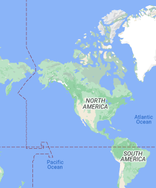 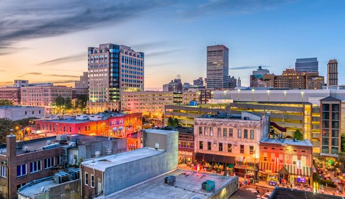 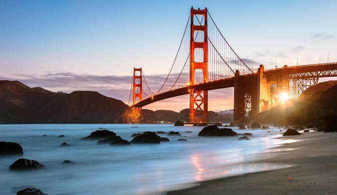
The United States is a diverse nation with natural wonders like the Grand Canyon, cultural symbols like the Statue of Liberty, and renowned national parks like Yellowstone.
- Grand Canyon, Arizona
- Known for its awe-inspiring natural beauty, the Grand Canyon is a massive chasm carved by the Colorado River, offering hiking and stunning vistas.
- Statue of Liberty, New York City
- A symbol of freedom and democracy, visitors can explore the statue and enjoy views of the city from Liberty Island.
- Yellowstone National Park, Wyoming
- Famous for its geothermal wonders, including geysers like Old Faithful, and a diverse range of wildlife.
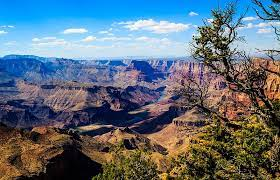 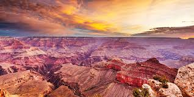 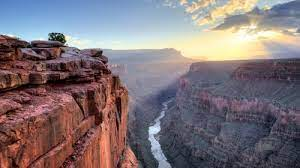
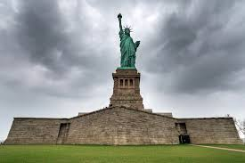 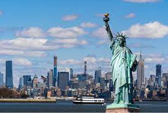
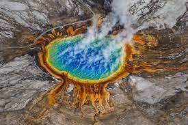 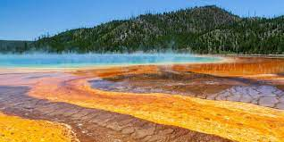

Mexico
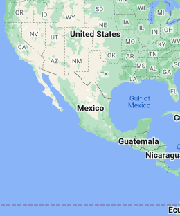 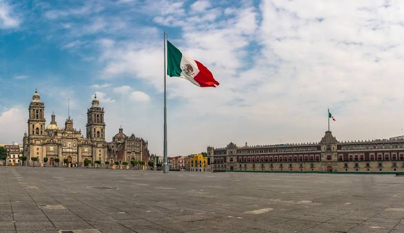 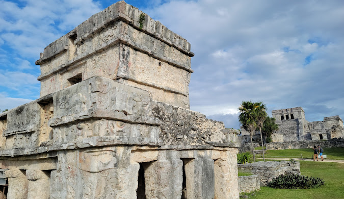
Mexico is known for its ancient ruins, beautiful beaches on the Riviera Maya, and vibrant culture. Chichen Itza and the capital, Mexico City, are popular destinations.
- Chichen Itza, Yucatan
- A UNESCO World Heritage site and one of Mexico's most famous Mayan ruins, known for the iconic El Castillo pyramid.
- Riviera Maya
- A beautiful stretch of coastline offering pristine beaches, crystal-clear waters, and access to the world's largest underwater cave system.
- Mexico City
- The capital city boasts historic sites, museums, vibrant markets, and a thriving culinary scene.
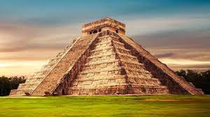 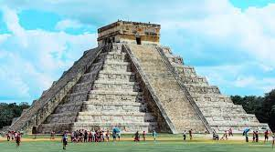 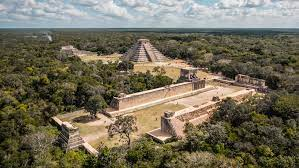
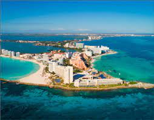 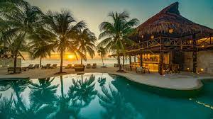 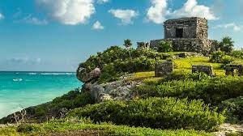
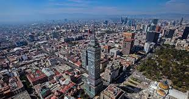 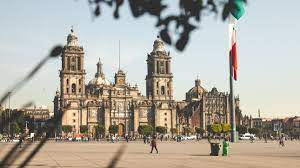 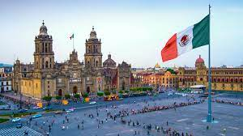
Peru
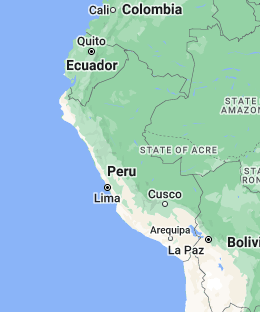 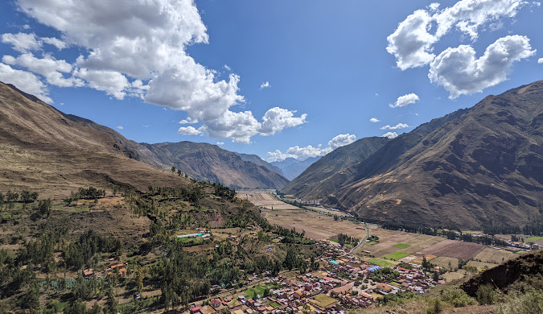 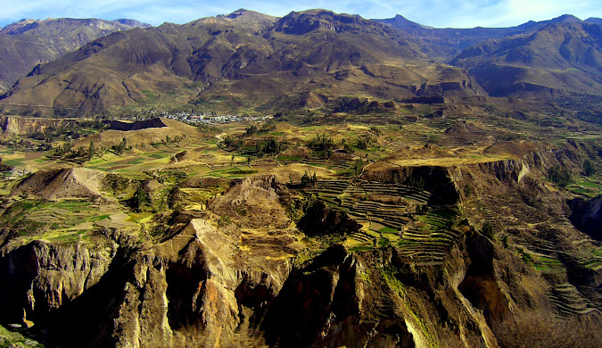
Peru is famous for its ancient Inca heritage, highlighted by Machu Picchu. The country offers diverse landscapes, including the Amazon Rainforest and the historic city of Cusco.
- Machu Picchu
- An ancient Inca citadel perched in the Andes mountains, Machu Picchu is a UNESCO World Heritage site and a breathtaking archaeological wonder.
- Amazon Rainforest
- Part of the world's largest tropical rainforest, the Amazon in Peru offers opportunities for wildlife viewing, jungle treks, and river cruises.
- Cusco
- Known as the "Historical Capital of Peru," Cusco is a charming city with well-preserved Inca and colonial architecture, and it serves as a gateway to Machu Picchu.
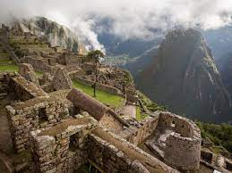 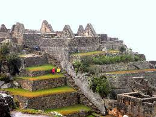
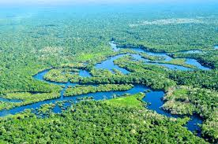 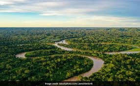 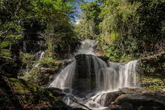
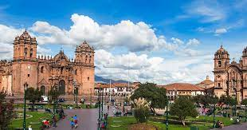 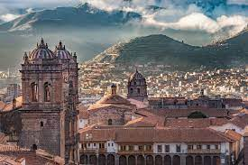 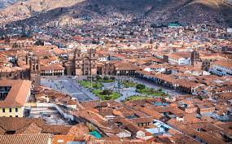